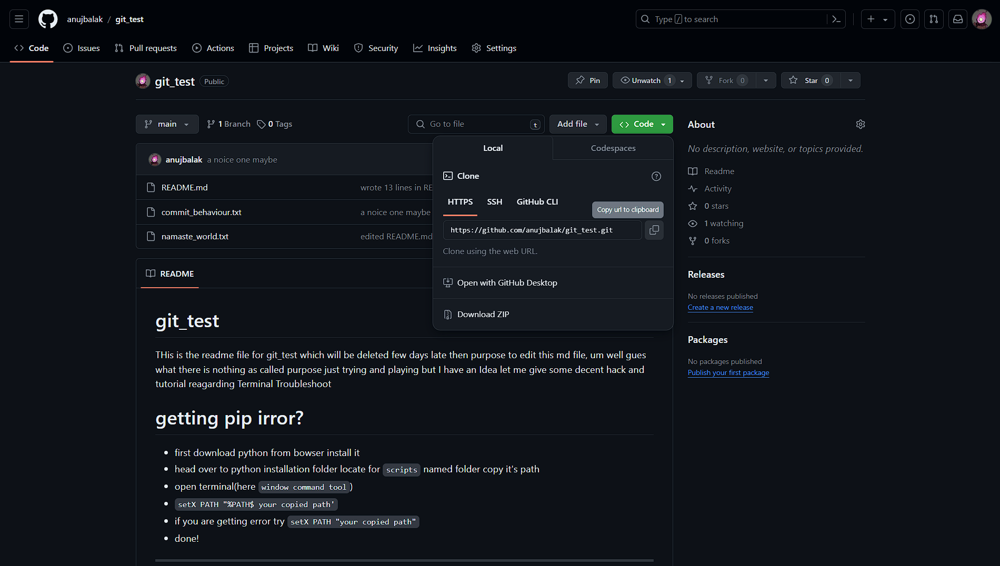

Find Link to clone Github Repository
Go to your browser and visit
www.github.com
alternatively if you have installed GitHub on your local computer, open the app
Open the repository you want to clone
Click on
code
option
see step_03 image
Click on copy icon
see step_04 image
You can also copy
SSH
and
GitHub CLI
links from here
gain see step_04 image
you are done!
STEP 03

STEP 04
Go Back